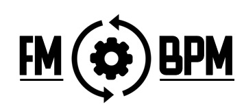
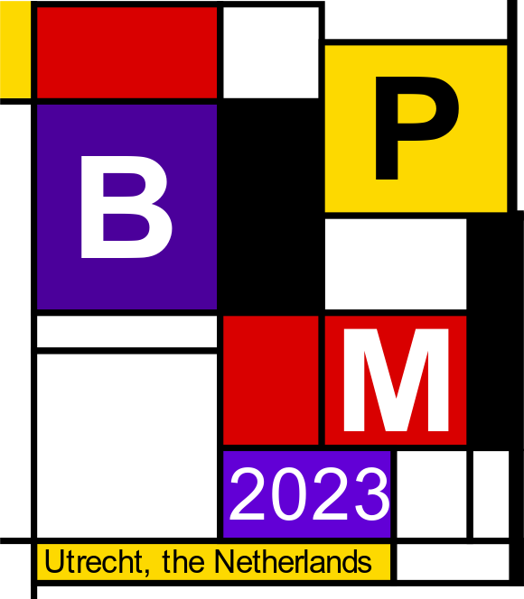

F irst International Workshop on Formal Methods for Business Process Management
Formal methods are a set of techniques, methods and tools that exploit rigorous mathematical notions for the specification, development, and analysis of complex systems. The main idea behind the use of formal methods is motivated by the expectation that performing appropriate mathematical analysis can contribute to the reliability, trustworthiness and robustness of the design of a system. Formal methods techniques are based on mathematics, formal logic, and, in general, on various instruments supplied by theoretical computer science and its foundations. These techniques are usually employed to formally verify hardware or software systems against some property of interest, to assess whether these systems satisfy it or not. In the field of BPM, formal methods can provide a repertoire consisting of both theoretical and practical toolkits to guarantee the correctness of processes and assess their capability to reach predetermined Key Performance Indicators.
Business Process Management (BPM) is the research field that investigates methods and techniques for describing, managing and improving the organization, control and interplay of activities, data and resources employed by companies and organizations to cooperatively achieve the desired outcome. Processes thus take into account not only the complex operational structure of the organization but also consider actors and possible objects and artifacts that these actors deal with during their work. Therefore, it becomes crucial that processes are correctly specified (preferably using a language with a mathematically defined meaning) and that their outcomes fulfill the intended requirements of the process and reach the planned goals. Due to design mistakes, process executions may result in unwanted behaviors that violate (some of) the predetermined objectives.
FM-BPM 2023 is a BPM 2023 international workshop and provides a platform for presenting and discussing in detail the application in the BPM area of key formal methods devices and best practices for system abstraction construction, technical underpinnings of analytic algorithms, formal demonstrations of correctness, guarantees for formal techniques, but also practicality of the proposed mathematical formalisms and possible drawbacks with the adoption of formal methods in practice.
 created with
Website Builder Software .